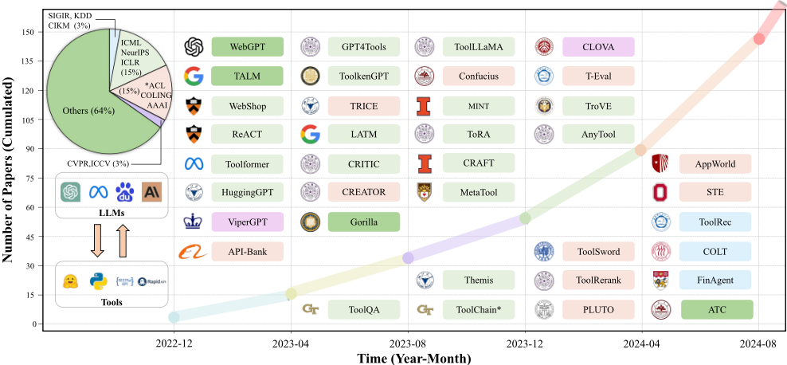
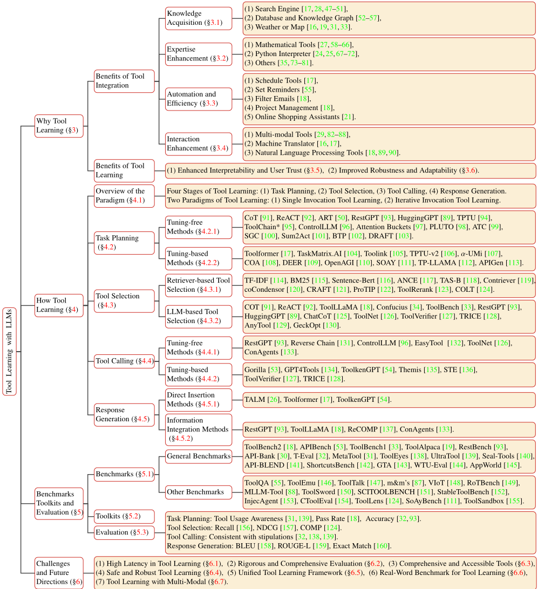
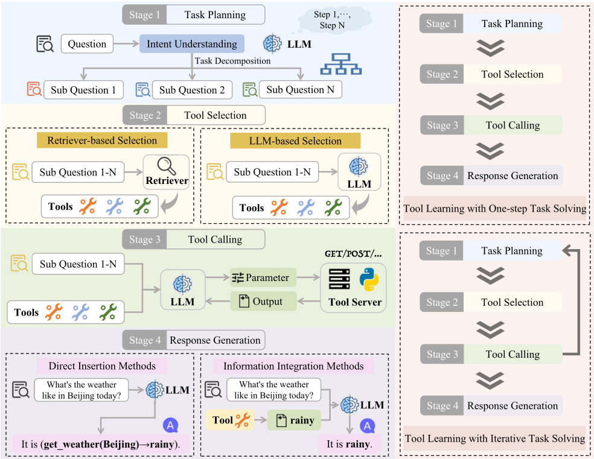

基于 LLM 的工具学习综述
该综述针对 LLM 工具学习（tool learning）文献碎片化、新人入门难的问题，从'为什么有益'与'如何实现'两条主线系统梳理该领域。作者将工具学习工作流拆为 task planning、tool selection、tool calling、response generation 四个阶段，区分 one-step 与 iterative 两种范式，逐阶段评述 tuning-free（CoT、ReAct 等提示驱动）与 tuning-based（微调）方法，并整理 33 个基准、常用工具包与分阶段评测指标（Recall@K、NDCG@K、COMP@K 等）。关键结论：真实系统工具数量庞大，需先检索后精选以控制上下文长度与延迟；tuning-free 方法灵活通用但完美提示设计仍是难题，tuning-based 方法受限于已见工具与算力；鲁棒性与安全是突出短板，即使 GPT-4 抗干扰能力也差。对团队而言，这是 Agent 工具调用链路设计与评测体系建设的系统性参考地图。
现有 tool learning with LLMs 的研究快速增长但文献碎片化、缺乏系统组织，给新入行的研究者与工业开发者造成入门门槛；论文旨在系统回答'为什么工具学习对 LLM 有益'与'如何实现工具学习'两个问题，并整理基准、评测方法、挑战与未来方向。
提出 'why + how' 双维综述框架：why 从知识获取、专业能力增强、自动化与效率、交互增强、可解释性与用户信任、鲁棒性与适应性六方面论证工具学习的价值；how 将工具学习形式化为 task planning、tool selection、tool calling、response generation 四阶段与 one-step/iterative 两种范式，逐阶段按 tuning-free（提示工程、CoT、ReAct、DFSDT、工具检索 BM25/语义检索、EasyTool 工具描述改写、ReCOMP 输出压缩等）与 tuning-based（Toolformer、ToolLLaMA、APIGen、GPT4Tools 等微调）分类评述；并汇总 33 个基准、LangChain/Auto-GPT/BabyAGI/BMTools/WebCPM 等工具包，以及各阶段评测方法（工具选择用 Recall@K/NDCG@K/COMP@K，工具调用校验参数内容与格式一致性，回复生成用 BLEU/ROUGE-L/exact match/F1），最后归纳延迟、评测、工具质量、安全鲁棒、统一框架、真实基准、多模态七大挑战。
本文为综述，无自身实验；其量化覆盖为评述超过 150 篇论文、整理 33 个工具学习基准
ToolBench2 为现有最大工具学习数据集，包含 16,464 个工具与 126,486 个实例
论文引用的实测数据：使用 ChatGPT 插件即使简单查询也可能耗时约 5 秒，延迟问题显著
论文引用的鲁棒性评测（Clean/Slight/Medium/Heavy/Union 五级噪声）显示即使最先进的 GPT-4 也表现出较差的抗干扰能力
相比其他仅顺带提及工具的综述（关于 LLM 技术、planning、reasoning、agents、RAG 等），本文提供对工具学习的聚焦且细致的分析，核心增量在于：(1) 'why+how' 双维组织方式；(2) 将工具学习形式化为四阶段工作流与 one-step/iterative 两种范式的分类法；(3) 按四阶段对 33 个基准与评测方法进行映射归类；(4) 相较 Mialon et al. (2023)、Qin et al. (2023) 等早期 perspective 文章覆盖了更多最新进展，并维护持续更新的 GitHub 资源仓库。
相关度级别：high
命中能力域：3.1 上下文工程与记忆 | 3.2 提示工程 | 3.3 Agent 架构与工具使用 | 3.5 评测与可靠使用
理由：团队核心工作是构建基于 LLM/Agent 的工程自动化工具，工具/技能调用正是 3.3 的核心技术：本文的四阶段工作流（规划-选工具-调用-生成）与 one-step/iterative 范式可直接作为团队 Agent harness 设计的参考框架与共同术语。工具检索（BM25/语义检索 top-K + LLM 精选）与工具输出压缩（截断、ReCOMP、RestGPT schema 简化、工具文档压缩）直接对应 3.1 的上下文长度与延迟管理问题；tuning-free 提示方法（CoT、ReAct、few-shot 示例、EasyTool 改写工具描述）对应 3.2；33 个基准清单与分阶段评测指标（Recall@K/NDCG@K/COMP@K、参数一致性校验、下游任务指标）及安全鲁棒性讨论直接支撑 3.5 的评测与可靠使用建设。3.4 多智能体协作仅在 ConAgents 等个别方法中顺带出现，非本文重点，故不命中。
建议动作：深入精读并做内部分享
arXiv:2405.17935v3 [cs.CL] 2024年11月4日
Front. Comput. Sci., 2024, 0(0): 1-33 https://doi.org/10.1007/sxxxxx-yyy-zzzz-1
Changle QU 1 , Sunhao DAI 1 , Xiaochi WEI 2 , Hengyi CAI 3 , Shuaiqiang WANG 2 , Dawei YIN 2 , Jun XU( ) 1 , Ji-Rong WEN 1
1
©高等教育出版社 2024
摘要 近年来，大语言模型（LLMs）工具学习已成为一种颇具前景的范式，能够增强 LLM 应对高度复杂问题的能力。尽管该领域受到越来越多的关注并取得了快速进展，但现有文献仍然零散、缺乏系统性梳理，为新入门者设置了进入门槛。这一空白促使我们对 LLM 工具学习的现有工作进行一次全面的综述。在本综述中，我们着重从两个主要方面回顾现有文献：（1）工具学习为何有益；（2）工具学习如何实现，从而实现对 LLM 工具学习的全面理解。我们首先从六个具体方面回顾工具集成的益处以及工具学习范式固有的优势，以此探讨“为何”的问题。在“如何”方面，我们依据工具学习工作流中四个关键阶段的分类体系系统地回顾文献：任务规划、工具选择、工具调用和响应生成。此外，我们对现有的基准测试（benchmark）和评估方法进行了详细总结，并根据它们与不同阶段的相关性对其进行分类。最后，我们讨论了当前的挑战并勾勒了潜在的未来方向，旨在激励研究人员和工业界开发者进一步探索这一新兴且充满前景的领域。
关键词 工具学习，大语言模型，Agent
“工欲善其事，必先利其器。”
纵观历史，人类不断追求创新，利用日益精密的工具来提升效率、增强能力 [1, 2]。这些工具既延伸了我们的智力，也拓展了我们的体能，在推动社会与文化演进方面发挥了至关重要的作用 [3]。从原始的
收稿日期：month dd, yyyy；录用日期：month dd, yyyy
电子邮箱：junxu@ruc.edu.cn

石器到先进的机械，这一进程使我们的潜能得以超越自然极限，让我们能够以更复杂、更高效的方式管理任务 [4]。
如今，我们正经历一场新的技术复兴，其动力来自人工智能领域的突破，尤其是大语言模型（Large Language Models, LLMs）的发展。以 ChatGPT [5] 为代表的先驱模型已展现出卓越的能力，在一系列自然语言处理（Natural Language Processing, NLP）任务中取得了显著进展，包括文本摘要 [6,7]、机器翻译 [8,9]、问答 [10,11] 等。然而，尽管能力令人瞩目，LLMs 由于依赖固定且参数化的知识，在处理复杂计算以及提供准确、及时的信息方面常常力不从心 [12,13]。这一固有局限经常导致模型给出看似合理却事实上不正确或过时的回答（通常称为幻觉）[14, 15]，从而带来重大风险并误导用户。
随着 LLMs 能力的持续增强，人们预期 LLMs 将像人类一样熟练地使用工具来解决复杂问题 [16]，这一概念被称为基于大语言模型的工具学习（tool learning with LLMs）。工具学习通过实现与外部工具的动态交互，成为缓解 LLMs 上述局限的一种有前景的解决方案 [1720]。这种方法不仅增强了 LLMs 的问题求解能力，还拓宽了其功能范围 [21-23]。例如，LLMs 可以使用计算器工具执行复杂计算，通过天气 API 获取实时天气信息，并借助解释器执行程序代码 [24, 25]。这种集成显著提高了 LLMs 对用户查询的响应准确性，促成了更有效、更可靠的用户交互。随着该领域的持续发展，工具增强的 LLMs 有望在 NLP 的未来发挥关键作用 [26, 27]，提供更加通用且更具适应性的解决方案 [28, 29]。
如图 1 所示，过去一年，随着大语言模型（LLM）的兴起，工具学习领域的研究工作迅速激增。值得注意的是，在实际应用中，GPT-4 [5] 通过调用插件来应对其知识局限并增强自身能力，最终将插件返回的结果与其内部知识相整合，从而为用户生成更好的响应。在学术界，人们已投入大量精力探索如何评估 LLM 的工具学习能力 [30-32]，以及如何增强这一能力以强化 LLM 的能力 [33-35]。鉴于基于 LLM 的工具学习日益受到关注并快速发展，系统性地回顾最新的进展与挑战至关重要，以便帮助研究人员和工业界开发者了解当前进展，并激发该领域更多未来的工作。
3
在本综述中，我们从两个主要维度对现有研究进行了系统性探索：（1）工具学习为何有益，以及（2）工具学习如何实现。具体而言，“为何工具学习”维度既考察了工具集成的优势，也考察了工具学习范式固有的益处；而“如何工具学习”维度则详细阐述了整个工具学习工作流的四个阶段：任务规划、工具选择、工具调用和响应生成。这些维度是理解基于 LLM 的工具学习的基础。此外，我们对现有的基准测试和评估方法进行了系统性总结，并根据它们在不同阶段的侧重点对其进行分类。最后，我们讨论了当前的挑战并提出未来方向，为这一充满前景且蓬勃发展的研究领域的发展提供关键见解。我们还在 https: 维护了一个 GitHub 仓库，以持续跟踪这一新兴领域的相关论文和资源。
值得注意的是，尽管其他综述对 LLM 所使用的技术与方法 [36]、规划 [37]、推理 [38, 39]、智能体（Agent）[40-42] 以及检索增强生成（Retrieval-Augmented Generation, RAG）[43,44] 等应用提供了全面的概述，但它们往往只是提及工具或工具学习，而未对这一方面进行深入探讨。与之相比，我们的综述对基于 LLM 的工具学习进行了聚焦而细致的分析，尤其阐明了两个方面的内容：工具学习为何对 LLM 至关重要，以及如何系统地实现工具学习。通过这两个主要方面，我们对基于 LLM 的工具学习提供了最新且全面的回顾。同时，我们也认可早期观点性论文的基础性贡献，例如 Mialon 等人（2023）[45] 和 Qin 等人（2023）[16] 的论文，它们最早指出了工具在增强 LLM 能力方面的广阔机遇。由于该领域发展迅速、新研究不断涌现，我们的综述对这些最新进展进行了更为广泛的介绍。此外，一篇较新的综述 [46] 讨论了语言模型中采用的各种工具使用场景与方法，可作为对我们全面综述的有益补充。
本文的其余部分（如图 2 所示）组织结构如下：我们首先介绍与工具学习相关的基础概念和术语（§2）。在此之后，我们从六个具体方面探讨工具学习对 LLM 的重要意义（§3）。接着，我们系统性地回顾工具学习的最新进展，重点关注工具学习工作流的四个不同阶段（§4）。随后，我们对工具学习的可用资源进行总结，包括基准测试（benchmark）和评估方法（§5）。接下来，我们讨论该领域当前面临的挑战，并概述未来研究的开放方向（§6）。最后，我们通过总结关键发现来结束本综述（§7）。
4

在本节中，我们概述与工具学习相关的关键概念和术语，以便更清晰地理解该领域的基本方面。
5
什么是工具？在增强型 LLM 的语境下，工具的定义相当宽泛。Mialon 等人 (2023) [45] 将工具表述为“对外部独立的或可操纵的附着环境对象的使用，以更高效地改变另一对象的形态、位置或状态”。另一方面，Wang 等人 (2024) [46] 将工具定义为“LM 使用的工具是运行于 LM 之外的计算机程序的函数接口，其中 LM 生成函数调用和输入参数以使用该工具”。类似地，我们认为任何通过外部手段增强 LLM 的方法都可被视为工具。值得注意的是，检索增强生成（Retrieval-Augmented Generation, RAG）是工具学习的一个具体实例，其中搜索引擎被用作 LLM 的工具。与此同时，“工具”的定义在不同论文中往往模糊且不一致。例如，一些研究明确区分了工具与 API，认为工具是多个 API 的聚合 [18, 33, 53]。相反，另一些研究则将每个 API 视为独立的工具 [19, 30, 122]。在本综述中，遵循前文确立的工具定义，我们将每个 API 视为一个单独的工具。
什么是工具学习？工具学习是指“旨在释放 LLM 的能力，使其与各种工具有效交互以完成复杂任务”的过程 [18]。这一范式显著提升了 LLM 解决复杂问题的能力。例如，当 ChatGPT 接收到用户查询时，它会评估调用某个特定工具的必要性。如果需要使用工具，ChatGPT 会透明地概述使用该工具解决问题的过程，并解释其回答背后的理由，从而确保用户获得有充分依据的答案。此外，当初始解决方案失败时，ChatGPT 会重新评估其工具选择，并采用替代工具来生成新的回答。
在本节中，我们将从两个主要视角阐述工具学习对大语言模型（LLM）的多方面重要性：工具集成的益处以及工具学习范式本身的益处。一方面，将工具集成到 LLM 中能够在多个领域增强其能力，即知识获取、专业知识增强、自动化与效率，以及交互增强。另一方面，采用工具学习范式能够增强响应的鲁棒性和生成过程的透明度，从而提升可解释性和用户信任，并改善系统的鲁棒性与适应性。后续小节将详细阐述这六个方面，说明工具学习为何对 LLM 至关重要。
尽管大语言模型（LLM）已在众多领域展现出巨大的能力 [161]，但其能力仍然受限于预训练阶段所学知识的范围 [12]。这种内嵌知识是有限的，且缺乏获取更新信息的能力。此外，LLM 的有效性还会因用户提供的提示而进一步受损，这些提示未必总是经过精心设计。因此，LLM 容易生成表面上看似合理、但可能包含事实性错误的内容，这种现象被称为幻觉（hallucination）。缓解这些局限的一种有前景的方法是为 LLM 增加访问外部工具的能力，使其能够动态地获取并整合外部知识。例如，采用搜索引擎工具可以使 LLM 获取最新信息 [17, 28, 47-51]；而集成数据库工具则使 LLM 能够访问结构化数据库，以检索特定信息或执行复杂查询，从而扩展其知识库 [52-57]。此外，连接天气工具可以实现对天气状况、预报和历史数据的实时更新 [19, 31, 33]；与地图工具对接则使 LLM 能够获取并提供地理数据，辅助导航和基于位置的查询 [16]。通过这些增强，LLM 能够超越传统局限，提供更准确、更具上下文相关性的输出。
6
鉴于 LLM 是在包含通用知识的数据集上训练的，它们在专业领域往往表现出能力不足。尽管 LLM 在基础数学问题上展现出强大的问题求解能力，在加法、减法等运算中表现出色，并在乘法任务中具备相当的水平，但当面对除法、幂运算、对数、三角函数以及其他更复杂的复合函数时，其能力会显著下降 [162, 163]。这一局限性还延伸到涉及代码生成 [164,165] 以及化学和物理问题 [73, 74] 等任务，进一步凸显了它们在更专业领域知识方面的差距。因此，采用特定工具来增强 LLM 的领域专业知识是可行的 [60, 61, 76, 166]。例如，LLM 可以使用在线计算器或数学工具来执行复杂计算、求解方程或分析统计数据 [27, 58-66]。此外，集成 Python 编译器和解释器等外部编程资源使 LLM 能够接收代码执行反馈，这对于改进代码以符合用户需求以及优化代码生成至关重要 [24, 25, 67-72]。同时，LLM 还可以利用化学 [73-75]、生物学 [76]、经济学 [77-79]、医学 [80,81] 以及推荐系统 [35] 等领域的工具来增强其领域专业知识。这种方法不仅缩小了 LLM 的专业知识差距，还通过提供领域特定知识提升了它们在专业应用中的实用性。
LLM 本质上是语言处理器，缺乏独立执行外部操作的能力，例如预订会议室或订购机票 [46]。将 LLM 与外部工具集成，只需在工具接口中填入必要的参数，即可实现此类任务的执行。例如，LLM 可以利用任务自动化工具来自动化重复性任务，如日程安排 [17]、设置提醒 [55] 和过滤电子邮件 [18]，从而增强其在用户辅助方面的实用性。此外，通过与项目管理和工作流工具对接，LLM 可以帮助用户管理任务、监控进度和优化工作流程 [18]。另外，与在线购物助手的集成不仅简化了购物流程 [21]，还提升了处理效率和用户体验。同时，采用数据表处理工具使 LLM 能够直接进行数据分析和可视化 [16]，从而简化了用户的数据操作过程。
由于现实世界中用户查询具有多样性和多面性，可能涵盖多种语言和模态，LLM 在持续一致地理解不同类型的输入方面常常面临挑战。这种可变性可能导致在辨别用户真实意图时产生歧义 [88]。部署专用工具可以显著增强 LLM 的感知能力。例如，LLM 可以利用语音识别和图像分析等多模态工具，以更好地理解并响应更广泛范围的用户输入 [29, 82-88]。此外，通过与机器翻译工具对接，LLM 能够将其不太熟练的语言转换为它们能更有效理解的语言 [16, 17]。另外，集成先进的自然语言处理工具可以增强 LLM 的语言理解能力，从而优化对话管理和意图识别 [18, 89, 90]。此类进展可能包括利用上下文理解模型来提升聊天机器人系统性能的平台。归根结底，改善感知输入和感觉知觉对于提升 LLM 处理复杂用户交互的能力至关重要。
当前 LLM 的一个重要问题在于其不透明的“黑箱”特性，即不向用户揭示其决策过程 [167, 168]，因而严重缺乏可解释性。这种不透明性常常导致人们对 LLM 所提供回答的可靠性产生怀疑，并使其正确性难以判定 [169]。此外，在航空、医疗和金融等高风险领域，准确性至关重要，可解释性尤为关键 [16,77]。因此，理解和解释 LLM 对于阐明其行为至关重要 [168]。一些研究通过使 LLM 能够生成带有引用的文本，提升了其准确性和可解释性 [170, 171]。相比之下，借助工具学习，LLM 可以展示其决策过程的每一步，从而使自身的运行更加透明 [16]。即使出现错误输出，这种透明性也能让用户快速识别并理解错误的来源，有助于更好地理解和信任 LLM 的决策，从而增强有效的人机协作。
现有研究表明，LLM 对提示（prompt）中的用户输入高度敏感 [172-174]。对这些输入仅做微小的修改就可能引发响应的显著变化，凸显出 LLM 缺乏鲁棒性。在现实世界中，不同用户有着不同的兴趣和提问方式，导致提示（prompt）形式多种多样。有研究提出集成专用工具，以此作为减少对训练数据中统计模式依赖的策略 [16-18,54, 89]。尽管用户提供的输入格式各不相同，但工具的输入和输出是相同的。这种增强提升了 LLM 对输入扰动的抵抗能力及其对新环境的适应性。因此，这种集成不仅能使模型在不确定条件下保持稳定，还能降低与输入错误相关的风险。
在本节中，我们将首先介绍工具学习的整体范式，其中包括四个不同的阶段和两种典型范式。遵循

这一框架，我们详细回顾了工具学习工作流程中的每个阶段，以及与每个阶段相关的最新进展。需要注意的是，许多工作涉及工具学习的多个阶段，但在此我们仅讨论其核心阶段。对于每个阶段，我们还给出了一个利用 GPT-4 进行工具学习以解决特定问题的实际现实示例，这些示例旨在帮助初学者更好地理解每个阶段所涉及的内容及其实现方式。
在本节中，我们将介绍工具学习的整个流程，包括使用工具增强型大语言模型（LLM）时所涉及的四个阶段和两种范式。
工具学习的四个阶段。如图 3 左侧所示，工具学习的典型流程包含四个阶段：任务规划、工具选择、工具调用和响应生成，众多与工具相关的工作均采用了这一流程 [89, 93, 94]。该流程描述了用户与工具增强型 LLM 的交互管线：给定一个用户问题，初步阶段由 LLM 分析用户的请求以理解其意图，并将其分解为潜在可求解的子问题。随后，选择合适的工具来解决这些子问题。根据是否使用检索器（retriever），这一工具选择过程可分为两类：基于检索器的工具选择和基于 LLM 的工具选择。近来，人们越来越关注首先使用检索器筛选出前 k 个（top-k）合适的工具 [18, 34, 122]。这种必要性源于以下事实：现实世界的系统通常拥有数量庞大的工具，受长度和延迟方面的限制，将所有工具的描述作为 LLM 的输入并不切实际 [124]。随后，用户查询连同所选工具一起提供给 LLM，使其能够选择最优工具并为工具调用配置必要的参数。这就要求 LLM 具备敏锐的工具使用意识，并能够正确选择所需的工具。此外，LLM 必须从用户查询中提取正确的工具参数，这一过程不仅要求参数内容准确，还要求符合特定的格式要求。在工具被调用之后，LLM 利用工具返回的结果为用户生成更优的响应。
工具学习的两种范式。如图 3 右侧所示，应用工具学习的范式可以分为两类：一步式任务求解的工具学习（tool learning with one-step task solving）和迭代式任务求解的工具学习（tool learning with iterative task solving）。这两种范式在 Wang et al. (2024) [40] 中也分别被称为无反馈规划（planning without feedback）和有反馈规划（planning with feedback），在 Huang et al. (2024) [37] 中被称为先分解（decomposition-first）和交错分解（interleaved decomposition）。在早期的工具学习研究 [17, 69, 89] 中，主要范式是一步式任务求解的工具学习：在接收到用户问题后，大语言模型（LLMs）会分析用户的请求以理解用户意图，并立即规划出解决问题所需的全部子任务。随后，LLMs 会直接根据所选工具返回的结果生成回复，而不考虑过程中出现错误的可能性，也不会根据工具反馈对计划进行调整。后续研究引入了一种新的范式，称为迭代式任务求解的工具学习 [18, 30, 34, 93]。这种方法并不预先制定完整的任务计划，而是允许与工具进行迭代交互，根据工具反馈逐步调整子任务。这使得 LLMs 能够逐步解决问题，并根据工具返回的结果持续改进其计划，从而提升问题解决能力。这种从一步式方法向迭代式方法的转变，标志着工具学习领域的一项重大进展。
通常，在现实场景中，用户查询往往蕴含复杂的意图。因此，首先需要进行任务规划，以对用户意图进行全面分析。这一阶段涉及根据实现既定目标的需要，将用户问题分解为多个子问题。此外，鉴于某些任务之间固有的依赖关系，规划器还需要明确所分解任务之间的依赖关系和执行顺序，从而便于在子问题之间建立相互联系。例如，下面展示了使用 GPT-4 进行任务规划的一个真实示例：
10
指令提示（Instruction Prompt）：你目前处于任务规划阶段。你将得到一个需要多步操作和推理的用户查询。你需要将用户的查询分解为若干子问题，并且只需在分解后输出这些子问题。请确保通过数量最少的子问题全面覆盖原始问题。
用户问题（User Question）：我想知道5盎司黄金加上100万股AMZN股票以人民币计的价值。
输出（Output）：1. 当前黄金每盎司的美元价格是多少？2. 亚马逊（AMZN）当前每股的美元股价是多少？3. 当前美元（USD）与人民币（CNY）之间的汇率是多少？
采用迭代任务求解范式的工具学习不便于进行分阶段演示，因此本示例采用了单步任务求解范式的工具学习。从该示例可以看出，GPT-4 将用户的问题分解为三个子问题。由于 GPT-4 的内部知识不包含最新信息，因此需要获取黄金和亚马逊（AMZN）股票的当前价格，以及美元与人民币之间的最新汇率。通过这种方式对查询进行分解，GPT-4 能够逐步处理复杂问题，展现了其逻辑分析能力和处理多步任务的能力。接下来，我们将介绍两类方法的最新进展：免微调方法（tuning-free methods）与基于微调的方法（tuning-based methods）。
现有研究 [50, 175, 176] 表明，大语言模型（LLMs）的固有能力使其能够通过少样本（few-shot）甚至零样本（zero-shot）提示等方法实现有效规划。例如，一些研究 [177-180] 利用提示将复杂任务分解为更简单的子任务，从而形成结构化的行动计划。ART [50] 构建了一个任务库，在遇到真实世界任务时从中检索示例作为少样本提示。RestGPT [93] 提出了一种由粗到细的在线规划（Coarse-to-Fine Online Planning）方法，这是一种迭代式任务规划方法，使 LLMs 能够逐步细化任务分解过程。HuggingGPT [89] 利用了一个精巧的提示设计框架，该框架将基于规范的指令与基于示例的解析方法相结合。ToolChain* [95] 通过将整个动作空间构建为一棵决策树来实施规划机制，树中的每个节点代表一次潜在的 API 函数调用。TPTU [94] 提出了一个专为基于 LLM 的 AI agent 设计的结构化框架，其中包含两种不同类型的 agent：单步 agent（One-step agent）和顺序 agent（sequential agent）。Attention Buckets [97] 以独特的旋转位置编码（RoPE）角度并行运行，形成相互补偿的不同波形，从而降低 LLMs 遗漏关键信息的风险。ControlLLM [96] 提出了一种被称为图上思考（Thoughts-on-Graph, ToG）的范式，该范式在预先构建的工具图上利用深度优先搜索（DFS）来寻找解决方案。PLUTO [98] 采用自回归规划方法，通过生成假设、执行聚类分析并细化子查询来迭代地提升性能，直至初始查询得到满足。ATC [99] 使 LLMs 能够独立学习并掌握新工具，其方法是利用工具链和黑盒探测方法来识别并记录工具使用情况。Tool-Planner [181] 根据功能相似的 API 函数将工具组织成工具包，使 LLMs 能够跨不同工具包进行规划。SGC [100] 通过将图神经网络（GNNs）与 LLMs 相结合来增强任务规划，从而在任务图中实现更高效、更准确的子任务选择。Sum2Act [101] 通过在每一步总结进度并根据任务状态和错误调整动作，引导 LLMs 解决复杂任务。BTP [102] 在预算约束下为工具使用制定最优方案，使 LLMs 在解决用户查询的同时高效管理成本。DRAFT [103] 提出了一种新颖的框架，旨在根据 LLMs 与外部工具之间的交互反馈动态调整和优化工具文档，从而提升 LLMs 的理解能力和工具使用能力。
11
尽管 LLMs 在零样本（zero-shot）或少样本（few-shot）设置下展现出令人印象深刻的性能，但与经过微调的模型相比，它们的效果仍然逊色 [182]。Toolformer [17] 采用那些确实能辅助模型预测后续 token 的 API 调用来微调 GPT-J，从而增强了 LLMs 有效利用工具的意识和能力。TaskMatrix.AI [104] 利用基于人类反馈的强化学习（Reinforcement Learning from Human Feedback, RLHF），借助通过人类反馈获得的知识与见解来增强基础模型。Toolink [105] 的创新之处在于将目标任务分解为用于解决问题的工具集，然后让模型通过求解链（chain-of-solving, CoS）方法利用这些工具来回答查询。TPTU-v2 [106] 开发了一个 LLM 微调器，使用精心整理的数据集对基础 LLM 进行微调，使微调后的 LLM 在任务规划和 API 调用方面具备更强的能力，尤其是针对特定领域的任务。α-UMi [107] 提出了一种新颖的两阶段训练范式：首先对基础大语言模型进行广泛微调，然后将其复制为规划器，以便在规划任务上进一步微调。COA [108] 训练 LLMs 先解码带有抽象占位符的推理链，然后调用领域工具，通过填充具体知识将每条推理链具体化。DEER [109] 通过自动生成具有多个决策分支的工具使用示例，激发 LLMs 在各种场景下的决策意识，并通过提出新颖的工具采样策略，增强 LLMs 对未见过的工具的泛化能力。SOAY [111] 首先让 LLM 基于复杂的用户输入生成可行的 API 调用方案（即解决方案），然后允许 LLM 基于生成的方案生成可执行的 API 调用代码。TP-LLaMA [112] 提出了一种利用先前被忽略的失败探索从思维树中创建偏好数据的方法，构建了用于 DPO 更新 LLM 策略的数据集。APIGen [113] 构建了一个自动化流水线，用于生成多样化、高质量且可验证的函数调用数据集，显著提升了使用这些数据微调的模型的性能。
评述。总之，任务规划作为工具学习的初始阶段，对于解决整个问题至关重要。尽管目前已有许多方法可用于增强 LLMs 的任务规划能力，但在面对复杂问题时直接生成完美的规划仍然具有挑战性。此外，工具学习是一个涉及 LLMs 与工具之间交互的过程。如何更好地利用工具的反馈来改进规划，仍然是一个值得研究的问题。
在任务规划阶段之后，LLMs 已经将用户问题分解为多个子问题。为了更好地解决这些子问题，有必要选择合适的工具。工具选择过程涉及通过检索器进行选择，或直接让 LLMs 从提供的工具列表中进行挑选。当工具数量过多时，通常会使用工具检索器来识别 topK 个相关工具并提供给 LLMs，这一过程被称为基于检索器的工具选择（retriever-based tool selection）。如果工具数量有限，或者在接收到工具检索阶段检索到的工具后，LLMs 需要根据工具描述和子问题来选择合适的工具，这被称为基于 LLM 的工具选择（LLM-based tool selection）。例如，下面展示了使用 GPT-4 进行工具选择的一个示例：
12
指令提示：你目前处于工具选择阶段。你将获得一些可能用于解决子问题的候选工具。请从候选工具中选出一组有助于解决该子问题的相关工具。
候选工具：1.Metals Prices Rates API：最新的 API 端点将返回每 60 秒更新一次的实时汇率数据。2.Medium：获取来自 Medium 的官方新闻。3.Cryptocurrency Markets：最近发布的加密货币视频。
输出：1.Metals Prices Rates API：最新的 API 端点将返回每 60 秒更新一次的实时汇率数据。
子问题 2：· · ·
输出：
. . . · · ·
从这个示例中可以看出，对于获取黄金价格这一子问题，GPT-4 能够正确选择必要的工具。具体而言，当面对多个候选工具时，GPT-4 能够分析每个工具的特性，并选择最适合回答该问题的工具。在此示例中，GPT-4 选择了 Metals Prices Rates API，因为它提供实时更新的黄金价格信息。这证明了 GPT-4 在工具选择方面的准确性和有效性。接下来，我们将介绍两个类别的最新进展：基于检索器的工具选择和基于 LLM 的工具选择。
现实世界的系统通常包含大量工具，由于长度限制和延迟约束，将所有工具的描述都输入 LLM 并不现实。因此，为了充分发挥工具增强型 LLM 的潜力，开发一个高效的工具检索系统至关重要。该系统旨在通过从庞大的工具集合中高效地选出针对给定查询最合适的 topK 个工具，来弥合 LLM 广泛能力与输入规模实际限制之间的差距。最先进的检索方法可以分为两类：基于词项的方法和基于语义的方法。
基于词项的方法。基于词项的方法（即稀疏检索）将文档和查询都表示为基于词项的高维稀疏向量，TF-IDF [114] 和 BM25 [115] 是其典型代表。这类方法采用精确词项匹配来实现查询与文档之间的高效对齐。例如，Gorilla [53] 采用 BM25 和 GPTIndex 构建检索器以实现工具检索。
基于语义的方法。相反，基于语义的方法（即稠密检索）利用神经网络来学习查询与工具描述之间的语义关系 [116-120]，然后使用余弦相似度等方法计算语义相似度。近来，开发和改进更高效的工具检索器引起了越来越多的关注。一些研究 [18, 34, 106] 训练 Sentence-Bert 模型作为工具检索器，从而实现相关工具的高效检索。CRAFT [121] 指示 LLM 根据给定查询生成一个虚构的工具描述，然后利用这个虚构的工具进行搜索。Anantha 等人（2023）[122] 基于任务分解的概念提出了 ProTIP。Xu 等人（2024a）[183] 提出了一种方法，通过利用 LLM 的反馈来逐步优化指令，并使检索与工具使用保持一致，从而增强工具检索。COLT [124] 提出了一种使用图神经网络（GNN）的新型工具检索方法，指出传统工具检索方法中经常被忽视的一个关键维度，即需要确保所检索工具的完整性。除召回阶段之外，Zheng 等人（2024）[123] 还考虑了工具检索的重排序阶段。他们考虑了已见工具与未见工具之间的差异，以及工具库的层次结构。基于这些考虑，他们提出了一种自适应且具备层次感知能力的重排序方法 ToolRerank。同时，我们也可以直接采用现成的嵌入 [184,185] 来获取用户查询和工具描述的表示。总之，构建高效的工具检索器至关重要。
13
注：尽管传统的信息检索方法适用于工具检索场景，但它们仍然存在诸如仅关注语义相似性而忽略工具层次结构等问题。未来的工作应考虑工具检索场景所特有的需求与特点，以构建更有效的工具检索器。
当工具库数量有限，或在接收到从工具检索阶段检索到的工具后，可以将这些工具的描述和参数列表连同提供给大语言模型（LLM）的用户查询一起纳入输入上下文中。随后，LLM 的任务是根据用户查询从可用工具列表中选择合适的工具。鉴于查询的解决有时对工具的调用顺序较为敏感，因此需要进行串行工具调用，即一个工具的输出可能作为另一个工具的输入参数。因此，这对 LLM 的推理能力提出了很高的要求。它必须能够根据当前掌握的信息以及尚需获取的信息，熟练地选择正确的工具。现有方法同样可以划分为免微调（tuning-free）和基于微调（tuning-based）两类。
免微调方法。免微调方法通过策略性的提示 [89,93] 来充分利用 LLM 的上下文学习（in-context learning）能力。例如，Wei 等人（2022）[91] 提出了思维链（chain of thought, COT）的概念，有效地将“让我们一步一步思考”这一指令融入提示结构之中。Yao 等人（2022）[92] 进一步推进了这一方向，提出了 ReACT——一个将推理与行动相结合的框架，从而使 LLM 不仅能够为行动提供依据，还能根据环境的反馈（例如工具的输出）来改进其推理过程。这一进展通过促成推理与行动之间更加动态的交互，在提升 LLM 的适应性与决策能力方面迈出了重要一步。基于上述见解，Qin 等人（2024）[18] 提出了 DFSDT 方法，该方法通过引入深度优先搜索策略来解决错误传播问题，从而提高决策的准确性。ChatCoT [125] 将工具调用融入多轮推理之中，使 LLM 能够将基于对话的推理与工具操作无缝结合。ToolNet [126] 将工具组织成有向图，使 LLM 能够从初始工具节点出发进行导航，迭代地选择工具直至任务完成。AnyTool [129] 通过利用工具的层次结构设计了一个更高效的工具检索器。GeckOpt [130] 通过增加意图驱动的门控来缩小工具选择的范围。
14
基于微调的方法。基于微调的方法直接在工具学习数据集上对大语言模型（LLM）的参数进行微调，以掌握工具的使用。Toolbench [33] 分析了开源 LLM 在工具学习过程中所面临的挑战，指出微调结合示例检索与系统提示的使用，能够显著提升 LLM 在工具学习中的效果。TRICE [128] 提出了一种两阶段框架：首先采用行为克隆对 LLM 进行指令微调，使其模仿工具使用的行为；随后利用工具执行反馈，通过基于执行反馈的强化学习（RLEF）进一步强化模型。ToolLLaMA [18] 使用由 DFSDT 方法得到的指令-解决方案对来微调 LLaMA 7B 模型。Confucius [34] 认识到工具复杂度的多样性，并提出了一种新颖的工具学习框架。ToolVerifier [127] 引入了一种自验证方法，在工具选择过程中通过自我提出对比性问题来区分相近的候选工具。
注：通过对比上述方法可以发现，基于微调的方法通过修改模型参数来提升 LLM 在工具选择方面的能力。这种方法能够整合大量与工具相关的知识，但仅适用于开源 LLM，且会消耗大量计算资源。相反，免微调方法则通过精确的提示策略或修改现有机制来增强 LLM 在工具选择方面的能力，并且与所有 LLM 兼容。然而，由于提示设计的可能性是无穷的，找到创建完美提示的理想方式仍然是一项重大挑战。
在实际应用中，可用工具数量庞大，加之上下文长度受限、延迟较高等约束，使得将所有选项同时呈现给 LLM 并不现实。为应对这一挑战，通常首先采用传统检索方法对潜在工具池进行筛选和缩减。这一初始步骤对于管理复杂性、确保后续基于 LLM 的选择既高效又有效至关重要。在这一检索过程之后，LLM 便可以进一步细化选择，做出符合其推理和偏好的最终决定。这种两步方法凸显了传统检索方法与基于 LLM 的技术之间的互补作用，表明了二者在优化面向真实场景的工具选择过程中共同的重要性。
在工具调用阶段，LLM 需要按照工具描述中所规定的规范，从用户查询中提取所需参数，并向工具服务器请求数据。这一过程要求 LLM 不仅能够正确提取参数的内容和格式，还必须严格遵循规定的输出格式，以避免生成多余的句子。例如，下面给出了一个使用 GPT-4 进行工具调用的示例：
指令提示：你当前处于工具调用阶段。你将获得一些有可能用于解决该子问题的已选工具。你的目标是根据工具描述，从子问题中提取调用该工具所需的参数。请按以下格式输出：{ 参数名： 参数， · · · , 参数名： 参数 }
已选工具：工具名称：{ Metals Prices Rates API }。工具描述：{ 最新的 API 端点将返回每 60 秒更新一次的实时汇率数据。} 所需参数：{ [名称： symbols, 类型： STRING, 描述： 输入以逗号分隔的货币代码或金属代码列表，以限定输出的代码。, 名称： base, 类型： STRING, 描述： 输入你所偏好的基础货币的三字母货币代码或金属代码。] }
输出：{ symbols: 'XAU', base: 'USD' } 子问题 2：· · · . . . 输出：· · ·
从这个示例中可以看出，GPT-4 能够根据给定的用户问题和所选工具的文档，提取调用工具所需的参数。具体而言，GPT-4 能够解析工具描述中的关键信息，并准确识别需要提供哪些参数。接下来，我们将按照与前两个阶段相同的方式介绍最新进展，将其划分为免微调（tuning-free）方法和基于微调（tuning-based）方法。
免微调方法主要利用少样本（few-shot）方式为参数提取提供示例，或采用基于规则的方法，从而增强大语言模型（LLMs）识别参数的能力 [93,96,126,186]。Reverse Chain [131] 利用逆向思维，首先为任务选定一个最终工具，然后让 LLMs 填充所需的参数；如果某些参数缺失，则根据工具描述选择另一个工具来补全这些参数并完成任务。EasyTool [132] 通过提示 ChatGPT 重写工具描述，使其更加简洁，并将工具功能指南直接融入描述之中，从而增强 LLMs 对工具功能和参数要求的理解。Xu 等人（2024b）[187] 提出了一种在保留关键信息的同时将工具文档压缩为摘要序列的方法，使 LLMs 能够以极小的性能损失高效地使用工具。ConAgents [133] 引入了一种多智能体协作框架，其中包含一个专门负责参数提取和工具调用的执行 Agent。
一些研究采用基于微调的方法来增强大语言模型（LLMs）的工具调用能力 [53,127,128]。例如，GPT4Tools [134] 使用由 ChatGPT 生成的工具使用指令数据集，通过结合 LoRA 优化技术的微调，将工具使用能力融入开源 LLMs 中。Toolkengpt [54] 使用一种名为 "toolkens" 的特殊标记来无缝调用工具：在预测到某个 toolken 时切换至特殊模式，以生成所需的输入参数，并将输出整合回生成过程。Themis [135] 以自回归的方式将工具使用与推理过程相整合，动态决定调用哪些工具、如何传递参数，并将结果有效地纳入推理过程，从而提升了奖励模型（RMs）的可解释性和评分可靠性。STE [136] 协调了生物系统中成功使用工具所涉及的三种关键机制：试错、想象和记忆，帮助 LLMs 准确地使用其训练过的工具。
16
此外，鉴于在工具使用过程中频繁出现调用错误，例如输入参数格式不正确、输入参数超出工具可接受的范围以及工具服务器错误，因此必须集成错误处理机制。这些机制旨在根据调用失败时返回的错误信息对动作进行修正。这使得系统更具韧性和适应性，即使面临运行中断，也能确保工具学习的连续性和效率。
注：总而言之，尽管基于微调的方法可以取得更好的效果，但它们严重依赖于训练集中出现过的工具，对于数据集中未包含的新工具表现较差。此外，它们还面临灾难性遗忘和缺乏稳健的泛化能力等挑战。相比之下，免微调方法具有显著的灵活性，且无需构建特定的数据集。因此，基于微调的方法和免微调方法对于增强 LLMs 的工具调用能力都至关重要。
鉴于工具输出的多样性和复杂性——其可能包含文本、数字、代码、视频和图像等多种格式——直接将这些结果呈现给用户往往并不现实。在接收到工具的输出后，LLMs 必须综合与用户查询相关的信息，并整合自身知识，以构建全面的响应。例如，下面展示了使用 GPT-4 进行响应生成的一个示例：
指令提示：你当前正处于响应生成阶段。你将获得所选工具的输出，这些工具可能被用于解决该子任务。你的目标是基于工具返回的结果以及你自身的内部知识，生成针对用户问题的响应。
用户问题：我想知道 5 盎司黄金加上 100 万股 AMZN 股票折合人民币（CNY）的价值。
工具调用返回：AMZN 的股价为 130 USD，XAU USD 为 1919.7605807522993，USD 与 YNC 之间的汇率为 7.24。
输出：· · · 以 CNY 计的总价值：总价值 = 黄金以 CNY 计的价值 + 股票以 CNY 计的价值 = 69,495.87 + 941,200,000 = 941,269,495.87 CNY。因此，5 盎司黄金与 100 万股亚马逊股票以人民币计的总价值约为 941,269,495.87 · · · 。
从这个示例中可以看出，GPT-4 能够通过结合工具返回的结果与其内部知识来提供更好的响应。具体而言，GPT-4 利用工具提供的实时数据（例如黄金价格、亚马逊股价以及汇率）来计算用户问题的最终答案。这展示了 GPT-4 整合多种信息来源并执行复杂计算的能力。我们将该阶段的最新进展归纳为两类：直接插入方法和信息整合方法。
17
早期工作所采用的方法是将工具的输出直接插入到生成的响应中 [17, 26, 46, 54]。例如，如果用户查询是"How is the weather today?"，大语言模型（LLMs）会生成类似"It's Weather()"的响应（如图 3 所示），随后该响应会被工具返回的结果所替换（例如，从"It's Weather()."变为"It's rainy."）。然而，由于工具的输出是不可预测的，这种方法可能会对用户体验造成潜在影响。
大多数方法选择将工具的输出纳入上下文中作为 LLMs 的输入，从而使 LLMs 能够基于工具提供的信息生成更优质的回复 [89,189,190]。然而，由于 LLMs 的上下文长度有限，某些工具输出无法直接输入给它们。因此，涌现出了各种方法来解决这一问题。例如，RestGPT [93] 利用预先创建的模式（schema）来简化冗长的结果，该模式是一种详细说明示例、格式和可能错误的文档。ToolLLaMA [18] 则采用截断的方式，将输出裁剪以符合长度限制，这可能会丢失解决用户查询所需的信息。相反，ReCOMP [137] 开发了一种压缩器，将冗长的信息压缩为更简洁的格式，仅保留最有用的信息。ConAgents [133] 提出了一种无模式（schema-free）的方法，使观察 Agent 能够根据指令动态生成一个自适应函数，用于提取目标输出。还有一些研究表明，利用工具反馈对 LLMs 生成的响应进行细化，比在调用工具之后再生成响应更为有效 [51, 191, 192]。
评注。总而言之，直接插入方法将工具输出直接嵌入到生成的响应中。这些方法简单直接，但仅适用于简单的工具输出。相反，信息整合方法允许 LLMs 处理工具结果以生成响应。这些方法更为强大，能够提供更好的响应，提升用户体验。然而，未来的工作应考虑如何解决与过于冗长的工具输出以及纳入多种其他模态相关的问题。与此同时，一些研究强调，LLMs 可能生成有偏见或有害的内容，并可能泄露敏感信息 [193-195]。通过引入外部工具，无论是采用直接插入方法还是信息整合方法，生成的响应都会受到工具结果的影响，这有助于缓解源自 LLM 本身的一些偏见和有害内容。尽管有这些好处，引入外部工具需要对工具输出进行严格验证，以防范对抗性攻击。如果缺乏充分的验证，攻击者可能操纵工具结果，导致 LLMs 生成有害或恶意的响应。未来的工作应着重于增强 LLMs 检测工具输出中有害信息的能力，并开发有效的过滤机制以防止生成有害内容。
18
| Benchmark | Focus | # Tools | # Instances | Tool Source | Multi-tool? | Executable? | Time |
|---|---|---|---|---|---|---|---|
| General Benchmarks | General Benchmarks | General Benchmarks | General Benchmarks | General Benchmarks | General Benchmarks | General Benchmarks | General Benchmarks |
| API-Bank [30] | ① , ② , ③ , ④ | 73 | 314 | Manual Creation | ✓ | ✓ | 2023-04 |
| APIBench [53] | ② , ③ | 1 , 645 | 16 , 450 | Public Models | ✗ | ✗ | 2023-05 |
| ToolBench1 [33] | ② , ③ | 232 | 2 , 746 | Public APIs | ✗ | ✓ | 2023-05 |
| ToolAlpaca [19] | ② , ③ , ④ | 426 | 3 , 938 | Public APIs | ✗ | ✗ | 2023-06 |
| RestBench [93] | ① , ② , ③ | 94 | 157 | RESTful APIs | ✓ | ✗ | 2023-06 |
| ToolBench2 [18] | ① , ② , ③ , ④ | 16 , 464 | 126 , 486 | Rapid API | ✓ | ✓ | 2023-07 |
| MetaTool [31] | ① , ② | 199 | 21 , 127 | OpenAI Plugins | ✓ | ✗ | 2023-10 |
| TaskBench [188] | ① , ② , ③ | 103 | 28 , 271 | Public APIs | ✓ | ✓ | 2023-11 |
| T-Eval [32] | ① , ② , ③ | 15 | 533 | Manual Creation | ✓ | ✓ | 2023-12 |
| ToolEyes [138] | ① , ② , ③ , ④ | 568 | 382 | Manual Creation | ✓ | ✓ | 2024-01 |
| UltraTool [139] | ① , ② , ③ | 2 , 032 | 5 , 824 | Manual Creation | ✓ | ✗ | 2024-01 |
| API-BLEND [141] | ② , ③ | - | 189 , 040 | Exsiting Datasets | ✓ | ✓ | 2024-02 |
| Seal-Tools [140] | ② , ③ | 4 , 076 | 14 , 076 | Manual Creation | ✓ | ✗ | 2024-05 |
| ShortcutsBench [142] | ② , ③ | 1 , 414 | 7 , 627 | Public APIs | ✓ | ✓ | 2024-07 |
| GTA [143] | ② , ③④ | 14 | 229 | Public APIs | ✓ | ✓ | 2024-07 |
| WTU-Eval [144] | ① | 4 | 916 | BMTools | ✓ | ✓ | 2024-07 |
| AppWorld [145] | ① , ② , ③ | 457 | 750 | FastAPI | ✓ | ✓ | 2024-07 |
| Other Benchmarks | Other Benchmarks | Other Benchmarks | Other Benchmarks | Other Benchmarks | Other Benchmarks | Other Benchmarks | Other Benchmarks |
| ToolQA [55] | QA | 13 | 1 , 530 | Manual Creation | ✗ | ✓ | 2023-06 |
| ToolEmu [146] | Safety | 311 | 144 | Manual Creation | ✗ | ✓ | 2023-09 |
| ToolTalk [147] | Conversation | 28 | 78 | Manual Creation | ✗ | ✓ | 2023-11 |
| VIoT [148] | VIoT | 11 | 1 , 841 | Public Models | ✗ | ✓ | 2023-12 |
| RoTBench [149] | Robustness | 568 | 105 | ToolEyes | ✓ | ✓ | 2024-01 |
| MLLM-Tool [88] | Multi-modal | 932 | 11 , 642 | Public Models | ✓ | ✓ | 2024-01 |
| ToolSword [150] | Safety | 100 | 440 | Manual Creation | ✓ | ✓ | 2024-02 |
| SciToolBench [151] | Sci-Reasoning | 2 , 446 | 856 | Manual Creation | ✓ | ✓ | 2024-02 |
| InjecAgent [153] | Safety | 17 | 1 , 054 | Public APIs | ✗ | ✓ | 2024-02 |
| StableToolBench [152] | Stable | 16 , 464 | 126 , 486 | ToolBench2 | ✓ | ✓ | 2024-03 |
| m&m's [87] | Multi-modal | 33 | 4 , 427 | Public Models | ✓ | ✓ | 2024-03 |
| GeoLLM-QA [166] | Remote Sensing | 117 | 1 , 000 | Public Models | ✓ | ✓ | 2024-04 |
| ToolLens [124] | Tool Retrieval | 464 | 18 , 770 | ToolBench2 | ✓ | ✓ | 2024-05 |
| SoAyBench [111] | Academic Seeking | 7 | 792 | AMiner | ✓ | ✓ | 2024-05 |
| ToolSandbox [155] | Conversation | 34 | 1 , 032 | Rapid API | ✓ | ✓ | 2024-08 |
| CToolEval [154] | Chinese | 398 | 6 , 816 | Public Apps | ✓ | ✓ | 2024-08 |
| Benchmark | Focus | # Tools | # Instances | Tool Source | Multi-tool? | Executable? | Time |
在本节中，我们系统地总结并归类了专门针对工具学习各个阶段量身定制的基准测试（benchmark）、工具包和评估方法。这为用于验证工具学习方法有效性的评估协议和工具包提供了结构化的概览，旨在使读者能够更便捷地上手并实现工具学习。
19
随着工具学习研究的不断推进，大量基准测试（benchmark）已被开发并公开发布。在本综述中，我们整理了 33 个流行的基准测试 1)，如表 1 所示。每个基准测试都评估了工具学习的不同侧面，并为其各自领域做出了重要贡献。我们将这些基准测试分为两大主要类别：通用基准测试和其他基准测试。
通用基准测试。鉴于目前对于大语言模型（LLMs）能否有效使用工具仍存在不确定性，研究者们建立了大量基准测试来评估 LLMs 的工具学习能力。由于工具学习包含四个不同的阶段，现有基准测试侧重于评估 LLMs 在不同阶段的能力。例如，MetaTool [31] 和 WTU-Eval [144] 基准测试旨在评估 LLMs 能否认识到使用工具的必要性，并恰当地选择最合适的工具来满足用户需求。这一评估尤其关注任务规划和工具选择阶段。另一方面，APIBench [53]、ToolBench1 [33]、API-BLEND [141] 和 Seal-Tools [140] 则聚焦于 LLMs 准确选择正确工具并为其调用配置正确参数的能力，分别对应工具选择和工具调用阶段。此外，RestBench [93]、TaskBench [188]、TEval [32] 和 UltraTool [139] 将关注范围扩展至任务规划、工具选择和工具调用，涵盖了四个阶段中的三个。随后的研究如 API-Bank [30]、ToolBench2 [18] 和 ToolEyes [138] 则对 LLMs 的工具使用能力提供了更全面的评估，覆盖了工具学习的全部四个阶段。值得注意的是，ToolBench2 构建了现有规模最大的工具学习数据集，包含 16,464 个工具和 126,486 个实例。然而，这些基准测试中包含的工具往往存在质量问题，例如无法访问或无法正常工作。此外，这些基准测试中的查询通常由 LLMs 生成，可能无法准确反映用户的真实需求。相比之下，GTA [143]、ShortcutsBench [142] 和 AppWorld [145] 通过收集真实世界的工具并基于实际用户需求生成查询，解决了上述局限性。
1) 鉴于工具学习日益受到关注，本综述可能未能涵盖所有基准测试。我们欢迎提出建议以扩充此列表。
近年来，为实现工具学习，研究者已提出若干开源库和工具包。
LangChain 是一个用于开发由大语言模型（LLM）驱动的应用程序的框架。它通过允许 LLM 与 API、数据库及其他系统交互，实现复杂工作流的构建。LangChain 非常适合构建智能助手和自动化系统。可通过以下链接访问：github.com/langchain-ai/langchain。
Auto-GPT 是一款开源应用，旨在让 LLM 在极少人工输入的情况下自主执行复杂任务。它允许模型将目标分解为子任务并按顺序执行，包括访问互联网以及与 API 交互。Auto-GPT 非常适合需要自主运行的项目，例如自动化内容创作与研究。可通过以下链接访问：github.com/Significant-Gravitas/Auto-GPT。
BabyAGI 是一个开源框架，用于创建能够以极少监督的方式管理和执行任务的自主 AI Agent。其模块化设计允许开发者通过集成额外的工具或 API 来扩展功能，使其非常适合灵活且可扩展的自动化。可通过以下链接访问：github.com/yoheinakajima/babyagi。
BMTools [16] 是一个开源仓库，旨在通过将 LLM 与各类工具相集成来增强 LLM，并提供一个由社区驱动的平台用于开发和共享这些工具。该仓库支持通过简单的 Python 函数轻松创建插件，并支持集成外部 ChatGPT 插件，是扩展模型能力的强大资源。可通过以下链接访问：github.com/openbmb/BMTools。
WebCPM [196] 是一个旨在利用交互式网络搜索开发中文长文本问答应用的框架。它允许 LLM 模拟类人的网页浏览行为，以从多种来源检索并整合信息。WebCPM 擅长构建复杂的工作流，在此类工作流中，LLM 与搜索引擎交互、提取相关数据并生成全面的答案。可通过以下链接访问：github.com/WebCPM/WebCPM。
响应生成。工具学习的最终目标是增强 LLM 有效解决下游任务的能力。因此，工具使用的有效性通常根据解决这些下游任务的表现来评估 [19, 138]。这就要求 LLM 整合在整个过程中收集到的信息，针对用户查询提供直接响应。最终响应的质量可以通过 BLEU 分数 [158]、ROUGE-L [159]、精确匹配（exact match）[160]、F1 [141] 等相关指标进行评估。
22
在本节中，我们指出了基于 LLM 的工具学习当前面临的挑战，并提出了一些有前景的未来研究方向。
在推理过程中，LLM 常常面临高延迟和低吞吐量的问题 [197]，而在集成工具学习时，这些挑战变得更加突出。例如，即使使用带有插件的 ChatGPT 处理简单的查询也可能需要 5 秒钟才能完成，与响应更快的搜索引擎相比，这显著降低了用户体验。探索降低延迟的方法至关重要，例如增强 LLM 对工具使用的感知能力，使其能够更好地判断何时真正需要使用工具。此外，保持工具的简洁性和响应速度也至关重要。应避免让单个工具承载过多功能，以维持效率和有效性。
尽管当前的研究表明，大语言模型（LLM）的工具学习已取得相当大的进展，各种应用中的实证研究便是明证，但在建立可靠的定量指标以评估和理解 LLM 使用工具的有效性方面，仍存在显著差距。此外，尽管已有众多策略被提出用于增强 LLM 的工具学习能力，但针对这些方法的深入对比评估仍然缺失。例如，人工评估虽然能够准确反映人类偏好，但成本高昂，且存在可重复性问题，缺乏普遍适用性。而自动化评估方法 ToolEval [18] 虽然提高了评估的效率和可复现性，却未必能反映用户的真实偏好。因此，有必要建立一个严谨而全面的评估框架，从整体上考虑效率、精度、成本和实用性。具体而言，该框架应针对不同阶段的改进提供独立的评估和归因分析，清晰界定它们对最终响应的具体贡献。这可能涉及定义新的评估指标，并构建能够模拟真实世界复杂性的评估环境。
现有的工作主要集中于利用工具来增强大语言模型（LLM）的能力，而这些工具的质量对工具学习的性能有着至关重要的影响 [46]。当前大多数工具都是从现有数据集或公共 API 中聚合而来的，这限制了它们的可访问性和全面性。此外，现有数据集仅包含有限的工具集合，无法覆盖多样化的用户查询 [90]。这些限制削弱了工具学习的实际适用性和深度。另外，当前的工作从不同来源获取工具，例如 Public APIs [19]、RESTful APIs [93]、Rapid APIs [18]、Hugging Face [53, 89, 188] 或 OpenAI 插件列表 [31]。这些工具来源的多样性导致其描述格式各不相同，从而阻碍了统一工具学习框架的开发。因此，迫切需要开发和编制一个更全面且易于访问的工具集。鉴于手动创建工具会带来巨大的开销，一种可行的方法是利用 LLM 大规模自动构建工具集 [198, 199]。此外，工具集应涵盖更广泛的领域，提供多样化的功能，以满足各个领域的特定需求。我们认为，一个全面且易于访问的工具集将显著加速工具学习的发展。
23
当前研究主要强调 LLM 在结构良好的环境中使用工具的能力，却忽视了现实世界应用中不可避免的噪声以及新出现的安全考量。当将基于 LLM 的工具学习部署到实际场景中时，安全问题与噪声便不可避免，这就要求采取审慎的方法来防御这些潜在攻击。Ye 等人（2024）[149] 引入了五个噪声等级（Clean、Slight、Medium、Heavy 和 Union）来评估 LLM 在工具学习中的鲁棒性。他们的研究结果表明性能出现显著下降，揭示出即使是最先进的模型 GPT-4，其抗干扰能力也很差。此外，Ye 等人（2024）[150] 设计了六个安全场景来评估 LLM 在工具学习中的安全性，发现 LLM 明显缺乏安全意识，致使其无法识别工具学习情境中的安全问题。随着工具学习系统在各行各业的广泛部署，对强健安全措施的迫切需求显著加剧。这就要求进行深入的研究并引入创新的方法，以强化这些系统的安全性与韧性。与此同时，为应对可能涌现的新型攻击向量，必须持续改进和更新安全策略，使之与快速演进的技术格局保持一致。
如第 4 节所述，工具学习的过程可以划分为四个不同的阶段。然而，现有研究主要只针对特定问题聚焦于其中某一个阶段，导致研究方法碎片化且缺乏标准化。这给实际场景中的可扩展性和通用性带来了重大挑战。当务之急是探索并开发一种全面的解决方案，在单一、统一的工具学习框架内涵盖任务规划、工具选择、工具调用和响应生成。
尽管工具学习领域已经开展了大量工作，但现有基准测试（benchmark）中的大多数查询都是由大语言模型（LLM）生成的，而非源自真实世界的用户查询。这些合成查询可能无法准确反映人类的真实兴趣以及用户进行搜索的方式。迄今为止，尚未发表任何涵盖用户与工具增强 LLM 之间真实交互的工具学习数据集。人们相信，发布这样一个数据集并建立相应的基准测试，将显著推动工具学习的发展。
尽管众多研究致力于将大语言模型（LLM）与外部工具相连接以拓展应用场景，但现有关于 LLM 工具学习的工作大多局限于基于文本的查询。这一局限可能导致对用户真实意图的解读含糊不清。LLM 有望通过整合视觉与听觉信息来增强对用户意图的理解。图像、音频、3D 和视频等多模态数据的使用日益增多，为进一步发展开辟了重要机遇。这包括探索多模态 LLM 在工具调用方面的能力，以及组合多模态工具以生成更优的响应。若干开创性研究项目已经对这一领域进行了探索。例如，Wang 等人 (2024) [88] 提出了 MLLM-Tool，这是一个整合了开源 LLM 与多模态编码器的系统，使经过学习的 LLM 能够感知多模态输入指令，进而选择正确匹配的工具。尽管已有这些初步尝试，针对多模态输入的工具学习探索尚未得到广泛研究。全面理解多模态 LLM 在工具调用方面的能力，对于推动该领域的发展至关重要。
24
本文回顾了150余篇论文，对基于大语言模型（LLM）的工具学习进行了全面综述。我们首先简要介绍“工具”与“工具学习”的概念，为初学者提供基础性概览和必要的背景知识。随后，我们阐明了工具集成与工具学习范式的诸多益处，从六个具体方面详细论述了工具学习为何对大语言模型至关重要。此外，为了更详细地介绍如何开展工具学习，我们将工具学习过程分解为四个不同的阶段：任务规划、工具选择、工具调用和响应生成。我们对每个阶段都进行了深入讨论，并结合最新研究进展，以便透彻理解每一个步骤。另外，我们总结并归类了针对工具学习这些阶段的现有基准测试（benchmark）与评估方法，提供了评估协议的结构化概览。最后，我们指出了若干潜在挑战，并明确了这一不断发展的领域中未来的研究方向。我们希望本综述能够为热衷于探索大语言模型工具学习这一蓬勃发展的领域的研究人员和开发者提供全面而宝贵的资源，从而为未来的研究工作铺平道路。
致谢 本工作受国家重点研发计划（2023YFA1008704）、国家自然科学基金（No. 62377044）、北京市大数据管理与分析方法重点实验室、“双一流”建设重大创新规划交叉平台、中国人民大学世界一流大学（学科）建设经费以及 PCC@RUC 的资助。作者衷心感谢 Yankai Lin 在本工作开展过程中提出的建设性反馈。
利益冲突 作者声明不存在需要披露的竞争性利益或财务冲突。